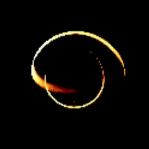
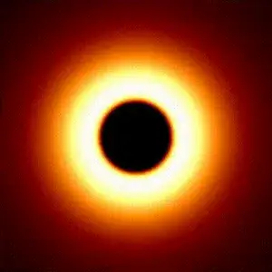
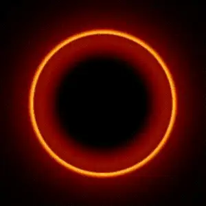
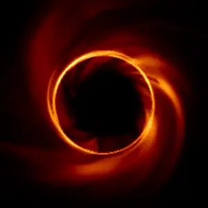

Simulations
Black-hole images are computed before they are observed. These pages collect the simulations I work with, from a single orbiting hotspot to full GRMHD, and explain how they are made.
A ladder of models



